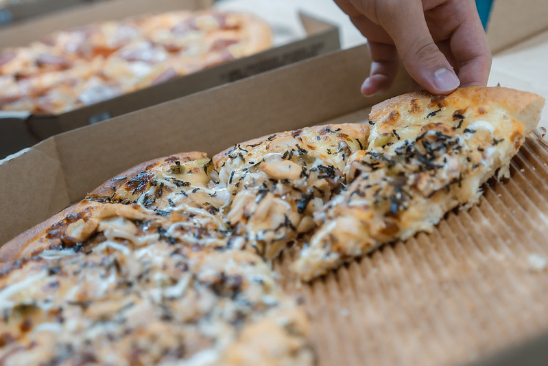
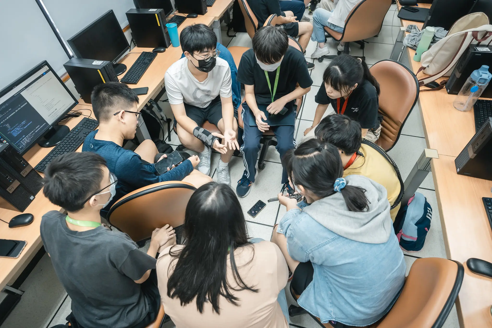
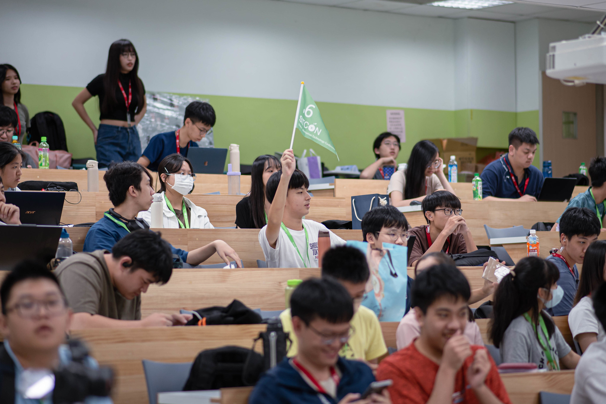

SITCON Camp2025


About SITCON
SITCON (Students’ Information Technology Conference) is a community organized by students dedicated to promoting information education and open-source spirit. It is a tech conference planned, organized, and presented by students for students. Besides technical discussions, the conference also features experience sharing, research presentations, and discussions on student-related issues from a student's perspective. We have also organized hackathons, workshops, and joint lectures with various school clubs.
SITCON Summer Camp
Fun and Learning Combined
As information science becomes an essential subject in the technological era, the SITCON team has created a summer camp that combines knowledge and practical application, allowing students interested in the field of information technology to easily get started and develop a passion for the open-source spirit.
Since 2014, SITCON Summer Camp has entered its ninth year, with courses covering open source, information security, Maker, Python, Node.js, front-end web scraping, visualization, Telegram bots, and many other diverse fields. In addition, the camp also includes community challenges, vision cafes, and hackathons, allowing participants to gain hands-on experience and discover their interests and strengths.
404 Not Found: Youth Should Not Throw Error
This year, SITCON Camp has adopted the theme "404 Not Found: Youth Should Not Throw Error," aiming to tell every student with dreams and curiosity: youth is naturally full of unknowns and challenges, and it's normal to occasionally encounter errors or get lost. Through continuous attempts and breakthroughs, you will eventually find your own path amidst confusion. Just like programming, when you encounter a problem, bravely debug, continually iterate, and transform every error in youth into an opportunity for growth, creating a meaningful and unique masterpiece.
2025 New Highlights
AI is leading a new wave of technology trends. SITCON Camp 2025 introduces AI-assisted front-end development courses for the first time, combined with backend programming languages taught from scratch, guiding participants to build their own web applications. Whether designing practical tools for daily needs or creating brand new projects with imagination, participants can easily turn ideas into reality with the help of AI. Through the implementation process, participants will not only gain a deep understanding of how AI assistance tools work but also develop cross-domain integration thinking, master future technology trends, and create their own brilliant future.

Past Records and Feedback
While SITCON Summer Camp provides solid content for participants, we also hope the entire learning process is fun and exciting!
Here are records and feedback from past events, giving you a better understanding of SITCON Summer Camp's wonderful content!
SITCON Camp 2024 Participant / Chen You-Wen
This camp was very fulfilling. It was exhausting but I also had a lot of fun. Although the participants were complete strangers to each other, we got along very well. The mentors were also very dedicated to teaching, and even though most of them were quite skilled, they never showed any impatience towards beginners like me. Even though I was in an unfamiliar environment, I still felt a sense of belonging. The camp activities were also very well-planned and enriching. If possible, I would like to participate again next year, even though the course content would probably be similar. I learned a lot from this camp. Thank you to all the brothers and sisters who worked hard for this camp!
SITCON Camp 2024 Participant / Chang Hui-Hsuan
This was my first real camp experience, as the one I attended the previous week felt more like attending classes where I didn't know anyone.
It was my first time participating in a hackathon. The parts I enjoyed most were when everyone in the team shared their ideas and the hackathon presentation (I'm not counting the programming part since I didn't do much of it). It was interesting to hear everyone's different perspectives, which helped me discover many points I hadn't thought of before. They were all crystallized from everyone's ideas.